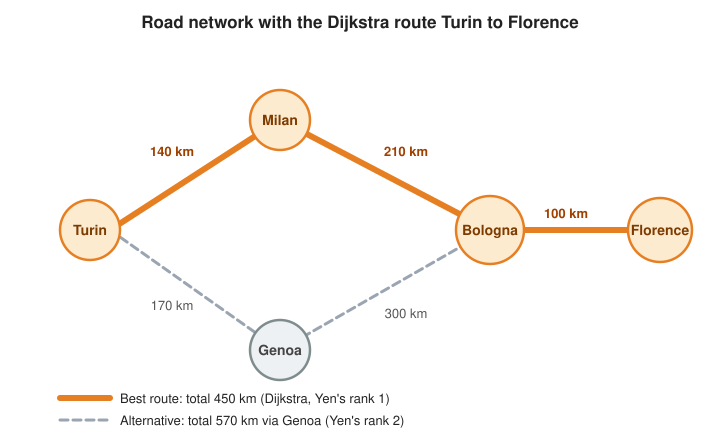

Logistics & Supply Chain
|
This content was generated with the assistance of AI and should be verified against the official documentation before being relied on in production. |
This page builds the logistics slice of a Spring Boot service on Neo4j: a road network that is queried for the best
route and its alternatives, a supply chain of suppliers, parts, products and warehouses that is queried for the
nearest warehouse with stock and for the products a supplier outage would hit, and a scheduled job that finds the
roads and cities the network depends on most. The Graph Data Science plumbing (the project, run and drop lifecycle,
the GdsGraphs helper, memory estimates and scheduling with ShedLock) is the one described in
Calling GDS from Spring Boot and is used
here without being repeated.
Problem
Vehicle routing and delivery planning reduce, at their core, to weighted shortest-path search over a location graph: the source is a depot, the target a delivery address, and the weight is distance, drive time or a blend of both. The same company also needs to know where a delivery should start (which warehouse is closest and actually has the goods), what a disruption upstream breaks (a supplier that stops delivering a part), and which places in the network are bottlenecks. The scenario, the road dataset and the algorithms are introduced in Routing and logistics optimization in the Neo4j Reference, and the algorithms themselves in Pathfinding and Centrality Algorithms. This page shows how to expose them from an application:
| Question | Technique | Where it runs |
|---|---|---|
Best route between two places |
Dijkstra with the road distance as weight |
GDS |
Faster search on a coordinate-aware network |
A* with latitude and longitude |
GDS |
Backup routes |
Yen’s k-shortest paths |
GDS |
Nearest warehouse with stock |
|
Plain Cypher on an indexed |
What a supplier outage breaks |
Bounded variable-length traversal |
Plain Cypher |
Which place is a bottleneck |
Betweenness Centrality, written back |
GDS |
Graph model
The road network is a graph of Location nodes joined by ROAD relationships that carry the distance and the
travel time; the supply chain hangs off the same graph through warehouses placed at locations.

The figure shows the roads dataset of the Neo4j Reference: five locations and five roads, with the best route from
Turin to Florence highlighted. The complete domain is:
Locations are the only nodes that carry geography. A location keeps its coordinates twice, on purpose: as a Point
for spatial queries, and as plain numeric latitude and longitude properties because a GDS projection can only
carry numeric properties and A* reads exactly those two. The ROAD relationship needs a relationship property
class, annotated with @RelationshipProperties, because it carries data of its own:
import java.util.ArrayList;
import java.util.List;
import org.springframework.data.annotation.Id;
import org.springframework.data.geo.Point;
import org.springframework.data.neo4j.core.schema.Node;
import org.springframework.data.neo4j.core.schema.Property;
import org.springframework.data.neo4j.core.schema.Relationship;
import org.springframework.data.neo4j.core.schema.RelationshipProperties;
import org.springframework.data.neo4j.core.schema.TargetNode;
@Node("Location")
public class Location {
@Id
private final String name;
private final Point location; // x = longitude, y = latitude, WGS-84
private final double latitude; // numeric copies, projected into GDS for A*
private final double longitude;
@Relationship(type = "ROAD", direction = Relationship.Direction.OUTGOING)
private final List<Road> roads = new ArrayList<>();
public Location(String name, double latitude, double longitude) {
this.name = name;
this.latitude = latitude;
this.longitude = longitude;
this.location = new Point(longitude, latitude);
}
public Location connectTo(Location other, double distance, double travelTime) {
roads.add(new Road(other, distance, travelTime));
return this;
}
public String getName() {
return name;
}
public Point getLocation() {
return location;
}
public List<Road> getRoads() {
return roads;
}
}
@RelationshipProperties
public class Road {
@TargetNode
private final Location target;
@Property("distance")
private final double distance; // kilometres
@Property("travelTime")
private final double travelTime; // minutes
public Road(Location target, double distance, double travelTime) {
this.target = target;
this.distance = distance;
this.travelTime = travelTime;
}
public Location getTarget() {
return target;
}
public double getDistance() {
return distance;
}
public double getTravelTime() {
return travelTime;
}
}The annotations and the relationship property pattern are those of
Modeling relationships with @Relationship;
the Point mapping is the one of
Geospatial queries. The location’s name is the
business key and the @Id, so there is no generated identifier to leak into the API. See
Spring Data Neo4j — Metadata-based mapping
and Spring Data Neo4j — Query creation.
The remaining entities are ordinary nodes. A warehouse is placed at a location and stocks products with a quantity, so
the STOCKS relationship is a second relationship property class; the bill of materials is a PART_OF chain from a
part through sub-assemblies up to a product:
@Node("Warehouse")
public class Warehouse {
@Id
private final String code;
private final String name;
@Relationship(type = "LOCATED_AT", direction = Relationship.Direction.OUTGOING)
private final Location site;
@Relationship(type = "STOCKS", direction = Relationship.Direction.OUTGOING)
private final List<Stock> stock = new ArrayList<>();
@Relationship(type = "SHIPS_TO", direction = Relationship.Direction.OUTGOING)
private final List<Customer> customers = new ArrayList<>();
public Warehouse(String code, String name, Location site) {
this.code = code;
this.name = name;
this.site = site;
}
public Warehouse stocks(Product product, int quantity) {
stock.add(new Stock(product, quantity));
return this;
}
}
@RelationshipProperties
public class Stock {
@TargetNode
private final Product product;
private final int quantity;
public Stock(Product product, int quantity) {
this.product = product;
this.quantity = quantity;
}
}
@Node("Supplier")
public class Supplier {
@Id
private final String code;
private final String name;
@Relationship(type = "SUPPLIES", direction = Relationship.Direction.OUTGOING)
private final List<Part> parts = new ArrayList<>();
public Supplier(String code, String name) {
this.code = code;
this.name = name;
}
}
@Node("Part")
public class Part {
@Id
private final String number;
private final String name;
@Relationship(type = "PART_OF", direction = Relationship.Direction.OUTGOING)
private final List<Part> assemblies = new ArrayList<>(); // the sub-assemblies this part goes into
@Relationship(type = "PART_OF", direction = Relationship.Direction.OUTGOING)
private final List<Product> products = new ArrayList<>(); // the products this part goes into directly
public Part(String number, String name) {
this.number = number;
this.name = name;
}
}
@Node("Product")
public class Product {
@Id
private final String sku;
private final String name;
public Product(String sku, String name) {
this.sku = sku;
this.name = name;
}
}
@Node("Customer")
public class Customer {
@Id
private final String code;
private final String name;
public Customer(String code, String name) {
this.code = code;
this.name = name;
}
}Two relationship fields of the same type but different target classes (assemblies and products on Part) are the
way to model a relationship whose target is one of two labels without inheritance. See
Spring Data Neo4j — Custom queries
and the entity chapter linked above. Everything that follows reads the model with Cypher, so the entities mostly serve
the write side and simple lookups.
Schema
Spring Data Neo4j does not create constraints or indexes by itself. The application creates them at startup, with
IF NOT EXISTS so that every start is idempotent. Uniqueness constraints give the MERGE statements of the write
side a fast key lookup, and a point index serves the nearest-warehouse query. The concepts are in
Indexes and Constraints:
@Component
public class LogisticsSchema implements ApplicationRunner {
private static final List<String> STATEMENTS = List.of(
"CREATE CONSTRAINT location_name IF NOT EXISTS FOR (l:Location) REQUIRE l.name IS UNIQUE",
"CREATE CONSTRAINT warehouse_code IF NOT EXISTS FOR (w:Warehouse) REQUIRE w.code IS UNIQUE",
"CREATE CONSTRAINT supplier_code IF NOT EXISTS FOR (s:Supplier) REQUIRE s.code IS UNIQUE",
"CREATE CONSTRAINT part_number IF NOT EXISTS FOR (p:Part) REQUIRE p.number IS UNIQUE",
"CREATE CONSTRAINT product_sku IF NOT EXISTS FOR (p:Product) REQUIRE p.sku IS UNIQUE",
"CREATE CONSTRAINT customer_code IF NOT EXISTS FOR (c:Customer) REQUIRE c.code IS UNIQUE",
"CREATE POINT INDEX location_point IF NOT EXISTS FOR (l:Location) ON (l.location)");
private final Neo4jClient client;
public LogisticsSchema(Neo4jClient client) {
this.client = client;
}
@Override
public void run(ApplicationArguments args) {
STATEMENTS.forEach(statement -> client.query(statement).run());
}
}Constraint and index creation is described in
Neo4j Cypher manual — Constraints and
Neo4j Cypher manual — Point indexes.
A point index is used by a point.distance(...) < radius predicate or by a bounding-box predicate on the indexed
property; the nearest-warehouse query below sorts by distance, which the index does not accelerate, so the index
matters mostly for radius searches. For a schema that evolves with releases, move these statements into a migration
tool as described in Spring Data Neo4j and the Neo4j Reference.
Writes
The road network is reference data that changes rarely, so it is loaded in bulk with an idempotent UNWIND and
MERGE statement through Neo4jClient. The PlaceSeed and RoadSeed records are the same shape as the dataset of the Neo4j page,
with a coordinate added to every location and a travel time added to every road:
public record PlaceSeed(String name, double latitude, double longitude) {
Map<String, Object> asMap() {
return Map.of("name", name, "latitude", latitude, "longitude", longitude);
}
}
public record RoadSeed(String from, String to, double distance, double travelTime) {
Map<String, Object> asMap() {
return Map.of("from", from, "to", to, "distance", distance, "travelTime", travelTime);
}
}
@Service
public class RoadNetworkLoader {
private final Neo4jClient client;
public RoadNetworkLoader(Neo4jClient client) {
this.client = client;
}
@Transactional
public void load(List<PlaceSeed> places, List<RoadSeed> roads) {
client.query("""
UNWIND $places AS place
MERGE (l:Location {name: place.name})
SET l.latitude = place.latitude,
l.longitude = place.longitude,
l.location = point({latitude: place.latitude, longitude: place.longitude})
""")
.bind(places.stream().map(PlaceSeed::asMap).toList()).to("places")
.run();
client.query("""
UNWIND $roads AS road
MATCH (a:Location {name: road.from}), (b:Location {name: road.to})
MERGE (a)-[r:ROAD]->(b)
SET r.distance = road.distance, r.travelTime = road.travelTime
""")
.bind(roads.stream().map(RoadSeed::asMap).toList()).to("roads")
.run();
}
}Both statements are safe to run again: MERGE on the unique key finds the existing node or relationship and SET
refreshes its properties. Roads are stored in one direction and treated as two-way by the projection, so there is
one ROAD per pair of cities and no duplicate to keep in sync. See
Neo4j Cypher manual — MERGE and
Neo4j Cypher manual — UNWIND.
Day-to-day changes are small and go through the repositories and entities: a warehouse receiving stock, a new customer for a warehouse, a closed road removed. A repository over the root entity needs nothing beyond the standard interface:
public interface WarehouseRepository extends Neo4jRepository<Warehouse, String> {
}Saving a Warehouse with its stocks(...) calls creates the LOCATED_AT, STOCKS and SHIPS_TO relationships in one
transaction. See
Spring Data Neo4j — Repositories core concepts.
For the transaction semantics and optimistic locking of such updates, see
Transactions in the Spring Data Neo4j page.
Queries and analytics
The road projection
Every route query runs on an in-memory copy of the road network. Because a road is a two-way street and the model
stores it once, the projection declares the relationship type undirected, and it carries the coordinates as node
properties for A*. The projection is a Cypher projection built with the gds.graph.project aggregation function, the
form described in
Native versus Cypher projections:
static final String ROADS_PROJECTION = """
MATCH (source:Location)-[road:ROAD]->(target:Location)
WITH gds.graph.project(
$graphName,
source,
target,
{
sourceNodeProperties: source {.latitude, .longitude},
targetNodeProperties: target {.latitude, .longitude},
relationshipProperties: road {.distance, .travelTime}
},
{undirectedRelationshipTypes: ['*']}
) AS graph
RETURN graph.nodeCount AS nodeCount, graph.relationshipCount AS relationshipCount
""";See GDS — Cypher projection.
For a network of a few hundred thousand roads this projection takes well under a second to build, which is why the
route endpoints project per request inside a try-with-resources block; a continent-sized network would keep a named
graph in the catalog instead and drop it when the roads change. The projection for a route is kept small by a
WHERE filter on the MATCH, for example a region or a road class driven by a request parameter.
Dijkstra, A* and Yen
All three algorithms share a request shape (a source, a target and a weight property) and differ in the procedure name
and a few configuration keys. The service below keeps them behind one small API and maps the YIELD rows to records,
as in the foundation page:
public record Route(List<String> stops, double totalCost) {
}
@Service
public class RoutingService {
private final Neo4jClient client;
private final GdsGraphs graphs;
public RoutingService(Neo4jClient client, GdsGraphs graphs) {
this.client = client;
this.graphs = graphs;
}
@Transactional(readOnly = true)
public Optional<Route> shortest(String from, String to, WeightProperty weight) {
try (var graph = graphs.projectCypher("roads", ROADS_PROJECTION, Map.of())) {
return client
.query("""
MATCH (source:Location {name: $from}), (target:Location {name: $to})
CALL gds.shortestPath.dijkstra.stream($graph, {
sourceNode: source,
targetNodes: [target],
relationshipWeightProperty: $weight
})
YIELD totalCost, nodeIds
RETURN totalCost, [nodeId IN nodeIds | gds.util.asNode(nodeId).name] AS stops
""")
.bind(graph.name()).to("graph")
.bind(from).to("from")
.bind(to).to("to")
.bind(weight.property()).to("weight")
.fetchAs(Route.class)
.mappedBy((typeSystem, record) -> toRoute(record))
.one();
}
}
@Transactional(readOnly = true)
public Optional<Route> shortestAStar(String from, String to) {
try (var graph = graphs.projectCypher("roads-astar", ROADS_PROJECTION, Map.of())) {
return client
.query("""
MATCH (source:Location {name: $from}), (target:Location {name: $to})
CALL gds.shortestPath.astar.stream($graph, {
sourceNode: source,
targetNode: target,
relationshipWeightProperty: 'distance',
latitudeProperty: 'latitude',
longitudeProperty: 'longitude'
})
YIELD totalCost, nodeIds
RETURN totalCost, [nodeId IN nodeIds | gds.util.asNode(nodeId).name] AS stops
""")
.bind(graph.name()).to("graph")
.bind(from).to("from")
.bind(to).to("to")
.fetchAs(Route.class)
.mappedBy((typeSystem, record) -> toRoute(record))
.one();
}
}
@Transactional(readOnly = true)
public List<Route> alternatives(String from, String to, int k) {
try (var graph = graphs.projectCypher("roads-yens", ROADS_PROJECTION, Map.of())) {
return client
.query("""
MATCH (source:Location {name: $from}), (target:Location {name: $to})
CALL gds.shortestPath.yens.stream($graph, {
sourceNode: source,
targetNode: target,
k: $k,
relationshipWeightProperty: 'distance'
})
YIELD index, totalCost, nodeIds
RETURN totalCost, [nodeId IN nodeIds | gds.util.asNode(nodeId).name] AS stops
ORDER BY index
""")
.bind(graph.name()).to("graph")
.bind(from).to("from")
.bind(to).to("to")
.bind(k).to("k")
.fetchAs(Route.class)
.mappedBy((typeSystem, record) -> toRoute(record))
.all()
.stream()
.toList();
}
}
private static Route toRoute(Record record) {
return new Route(
record.get("stops").asList(Value::asString),
record.get("totalCost").asDouble());
}
}
public enum WeightProperty {
DISTANCE("distance"),
TRAVEL_TIME("travelTime");
private final String property;
WeightProperty(String property) {
this.property = property;
}
public String property() {
return property;
}
}The procedures and their configuration are documented in
GDS — Dijkstra Source-Target,
GDS — A* and
GDS — Yen’s algorithm. Dijkstra takes its target as
targetNodes (a list, here of one node): the manual marks the single targetNode key as deprecated for Dijkstra, while
A* and Yen’s still document targetNode. The weight property is the
only thing the caller chooses at runtime, and it is chosen from a closed enum and bound as a parameter, so a request
can never inject a property name; a blended cost would be a third property written onto the roads or computed in the
projection. The procedure names stay in the statement text because a procedure name cannot be a parameter.
The three algorithms answer different questions:
-
Dijkstra is the default: the lowest-cost route for any non-negative weight, here either distance or travel time.
-
A*returns the same optimal route when its heuristic is admissible, visiting fewer nodes on a large geographically spread network. The heuristic is the great-circle distance between thelatitudeandlongitudeproperties, so the weight and the heuristic must use compatible units; a heuristic that over-estimates the real cost can return a route that is not the cheapest. Check the unit expected by the procedure in the A-star page of the GDS manual before switching a network to A*, and keep Dijkstra as the reference result in tests. -
Yen’s returns up to
kloopless routes in increasing order of cost: the primary route plus the fallbacks to offer when a road is closed, without recomputing from scratch. If the network has fewer thankdistinct routes, fewer rows come back.
Nearest warehouse with stock
The question "where should this order ship from" is a spatial filter plus an inventory filter, and it needs no
projection, so it is plain Cypher and cheap enough for a request. The warehouse’s position is the position of its
location, and the stock check is a predicate on the STOCKS relationship property:
public record WarehouseOffer(String code, String name, String city, int quantity, double distanceMeters) {
}
@Service
public class FulfilmentService {
private final Neo4jClient client;
public FulfilmentService(Neo4jClient client) {
this.client = client;
}
@Transactional(readOnly = true)
public Optional<WarehouseOffer> nearestWithStock(String sku, int quantity, double latitude, double longitude) {
return client
.query("""
MATCH (w:Warehouse)-[:LOCATED_AT]->(site:Location),
(w)-[stock:STOCKS]->(:Product {sku: $sku})
WHERE stock.quantity >= $quantity
WITH w, site, stock,
point.distance(site.location, point({latitude: $latitude, longitude: $longitude})) AS distance
RETURN w.code AS code, w.name AS name, site.name AS city,
stock.quantity AS quantity, distance
ORDER BY distance
LIMIT 1
""")
.bind(sku).to("sku")
.bind(quantity).to("quantity")
.bind(latitude).to("latitude")
.bind(longitude).to("longitude")
.fetchAs(WarehouseOffer.class)
.mappedBy((typeSystem, record) -> new WarehouseOffer(
record.get("code").asString(),
record.get("name").asString(),
record.get("city").asString(),
record.get("quantity").asInt(),
record.get("distance").asDouble()))
.one();
}
}The Cypher function point.distance returns the geodesic distance in metres between two WGS-84 points; the inventory
predicate removes a nearer warehouse that cannot fill the order, which is the point of the query. See
Neo4j Cypher manual — Spatial functions and the custom
point() and distance() section of
the Spring Data Neo4j page.
The straight-line distance is only the shortlisting criterion: once the warehouse is chosen, shortest(...) gives the
real road route from its location to the customer’s.
Disruption impact
A supplier that stops delivering one part disrupts every product that part ends up in, however many sub-assemblies lie
in between. That is a variable-length traversal along the PART_OF direction, and it must be bounded: an unbounded
pattern on a bill of materials with a data error (a part that is, through a cycle, part of itself) would never end.
The report returns the affected products, the parts on the way and the units in stock that could still be shipped while the replacement is found:
public record ImpactedProduct(String sku, String name, List<String> viaParts, long unitsInStock) {
}
@Service
public class DisruptionService {
private static final String IMPACT = """
MATCH path = (supplier:Supplier {code: $supplier})-[:SUPPLIES]->(:Part)-[:PART_OF*1..5]->(product:Product)
WITH product,
collect(DISTINCT [n IN nodes(path) WHERE n:Part | n.number]) AS chains
OPTIONAL MATCH (:Warehouse)-[stock:STOCKS]->(product)
RETURN product.sku AS sku,
product.name AS name,
apoc.coll.toSet(apoc.coll.flatten(chains)) AS viaParts,
coalesce(sum(stock.quantity), 0) AS unitsInStock
ORDER BY sku
""";
private final Neo4jClient client;
public DisruptionService(Neo4jClient client) {
this.client = client;
}
@Transactional(readOnly = true)
public List<ImpactedProduct> impactOf(String supplierCode) {
return client.query(IMPACT)
.bind(supplierCode).to("supplier")
.fetchAs(ImpactedProduct.class)
.mappedBy((typeSystem, record) -> new ImpactedProduct(
record.get("sku").asString(),
record.get("name").asString(),
record.get("viaParts").asList(Value::asString),
record.get("unitsInStock").asLong()))
.all()
.stream()
.toList();
}
}The upper bound of the pattern is a literal in the statement, because the bounds of a variable-length pattern cannot be
parameters; if it must be configurable, choose it from a fixed set and build the statement from constants. The DISTINCT
and the collect keep a product that is reachable through two sub-assemblies from appearing twice, and the two APOC
collection functions flatten and de-duplicate the part numbers; they are part of APOC Core, which the integration test
below installs. Without APOC the same result is obtained with reduce over the collected lists. See
Neo4j Cypher manual — Variable-length patterns
and APOC — Collection functions.
Bottlenecks with Betweenness Centrality
Which city sits on the most shortest routes is a question for Betweenness Centrality, which scores every node by the
share of shortest paths between other pairs that pass through it. It looks at the whole network and is expensive, so it
is not run per request: a scheduled job projects the network, writes the score back onto each Location, and the
endpoint reads the stored property. The projection, the write mode and the estimate guard are described in the
foundation page; the job only adds the specific call:
public record WriteSummary(long nodePropertiesWritten) {
}
@Service
public class BottleneckService {
private final Neo4jClient client;
private final GdsGraphs graphs;
public BottleneckService(Neo4jClient client, GdsGraphs graphs) {
this.client = client;
this.graphs = graphs;
}
public WriteSummary recomputeBottlenecks() {
try (var graph = graphs.projectCypher("bottlenecks", ROADS_PROJECTION, Map.of())) {
return client
.query("""
CALL gds.betweenness.write($graph, {writeProperty: 'bottleneckScore'})
YIELD nodePropertiesWritten
RETURN nodePropertiesWritten
""")
.bind(graph.name()).to("graph")
.fetchAs(WriteSummary.class)
.mappedBy((typeSystem, record) -> new WriteSummary(record.get("nodePropertiesWritten").asLong()))
.one()
.orElseThrow();
}
}
@Transactional(readOnly = true)
public List<Bottleneck> top(int limit) {
return client
.query("""
MATCH (l:Location)
WHERE l.bottleneckScore IS NOT NULL
RETURN l.name AS city, l.bottleneckScore AS score
ORDER BY score DESC
LIMIT $limit
""")
.bind(limit).to("limit")
.fetchAs(Bottleneck.class)
.mappedBy((typeSystem, record) -> new Bottleneck(
record.get("city").asString(), record.get("score").asDouble()))
.all()
.stream()
.toList();
}
}
public record Bottleneck(String city, double score) {
}
@Component
public class BottleneckJob {
private static final Logger log = LoggerFactory.getLogger(BottleneckJob.class);
private final BottleneckService bottlenecks;
public BottleneckJob(BottleneckService bottlenecks) {
this.bottlenecks = bottlenecks;
}
@Scheduled(cron = "${logistics.bottlenecks.cron:0 30 3 * * *}")
@SchedulerLock(name = "logistics-bottlenecks", lockAtMostFor = "PT1H", lockAtLeastFor = "PT5M")
public void run() {
log.info("Bottleneck scores written: {}", bottlenecks.recomputeBottlenecks());
}
}The @SchedulerLock annotation, the lock provider and the choice of lockAtMostFor are covered in
Scheduling and ShedLock; for this job lockAtMostFor only has to
exceed the longest realistic run. The procedure is documented in
GDS — Betweenness Centrality.
Betweenness counts shortest paths by the number of hops and does not take the road length into account, so a result
is a statement about the shape of the network, not about kilometres; on a very large network, set samplingSize and
samplingSeed in the configuration to trade accuracy for a bounded running time. The endpoint reads the stored score
and can cache it as described in Caching, evicting the cache when the job ends.
Service and API
The controller is a thin layer over the services: validation of the inputs, a stable JSON shape, and no Cypher. The conventions of resource design and error responses are those of REST APIs:
@RestController
@RequestMapping("/routes")
@Validated
public class RoutesController {
private final RoutingService routing;
private final FulfilmentService fulfilment;
public RoutesController(RoutingService routing, FulfilmentService fulfilment) {
this.routing = routing;
this.fulfilment = fulfilment;
}
@GetMapping
public RouteResponse route(@RequestParam @NotBlank String from,
@RequestParam @NotBlank String to,
@RequestParam(defaultValue = "DISTANCE") WeightProperty weight,
@RequestParam(defaultValue = "DIJKSTRA") Algorithm algorithm,
@RequestParam(defaultValue = "1") @Min(1) @Max(10) int alternatives) {
var best = switch (algorithm) {
case DIJKSTRA -> routing.shortest(from, to, weight);
case ASTAR -> routing.shortestAStar(from, to);
};
var route = best.orElseThrow(() -> new RouteNotFoundException(from, to));
var others = alternatives > 1
? routing.alternatives(from, to, alternatives).stream().skip(1).toList()
: List.<Route>of();
return new RouteResponse(route, others);
}
@GetMapping("/nearest-warehouse")
public WarehouseOffer nearestWarehouse(@RequestParam String sku,
@RequestParam(defaultValue = "1") @Min(1) int quantity,
@RequestParam double lat,
@RequestParam double lon) {
return fulfilment.nearestWithStock(sku, quantity, lat, lon)
.orElseThrow(() -> new NoStockException(sku, quantity));
}
public enum Algorithm { DIJKSTRA, ASTAR }
public record RouteResponse(Route best, List<Route> alternatives) {
}
}
@RestController
public class SupplyChainController {
private final DisruptionService disruptions;
private final BottleneckService bottlenecks;
public SupplyChainController(DisruptionService disruptions, BottleneckService bottlenecks) {
this.disruptions = disruptions;
this.bottlenecks = bottlenecks;
}
@GetMapping("/suppliers/{code}/impact")
public List<ImpactedProduct> impact(@PathVariable String code) {
return disruptions.impactOf(code);
}
@GetMapping("/bottlenecks")
public List<Bottleneck> bottlenecks(@RequestParam(defaultValue = "5") @Min(1) @Max(50) int limit) {
return bottlenecks.top(limit);
}
}GET /routes?from=Turin&to=Florence&alternatives=3 returns the best route and the other routes the network offers.
RouteNotFoundException and NoStockException map to 404 through a @RestControllerAdvice, as in the REST APIs
page. See Spring Framework — Annotated
controllers.
The route endpoint is safe to call synchronously only while the projection stays small: it builds, runs and drops a graph per request. Two guards belong in front of it in production: authorization, so that only the dispatching system and its operators can read the routes and the supplier impact (Spring Security), and metrics on the duration of the GDS calls and on rejected requests (Metrics and Observability). A cache of fixed-origin routes with a short time to live helps when the same depot-to-city pairs are asked repeatedly.
Integration test
The test starts a real Neo4j with the GDS and APOC plugins, loads the road dataset of the Neo4j Reference and a small
supply chain, and asserts the observable results. Container setup, @ServiceConnection and the plugin variable are the
ones of the foundation page; the general test setup of Spring Boot applications is in
Unit and Integration Testing:
import static org.assertj.core.api.Assertions.assertThat;
import java.util.List;
import java.util.Map;
import org.junit.jupiter.api.BeforeEach;
import org.junit.jupiter.api.Test;
import org.springframework.beans.factory.annotation.Autowired;
import org.springframework.boot.test.context.SpringBootTest;
import org.springframework.boot.testcontainers.service.connection.ServiceConnection;
import org.springframework.data.neo4j.core.Neo4jClient;
import org.testcontainers.junit.jupiter.Container;
import org.testcontainers.junit.jupiter.Testcontainers;
import org.testcontainers.neo4j.Neo4jContainer;
@Testcontainers
@SpringBootTest
class LogisticsGraphIT {
@Container
@ServiceConnection
static final Neo4jContainer NEO4J = new Neo4jContainer("neo4j:2026.10.1")
.withEnv("NEO4J_PLUGINS", "[\"graph-data-science\", \"apoc\"]");
@Autowired Neo4jClient client;
@Autowired RoadNetworkLoader loader;
@Autowired RoutingService routing;
@Autowired FulfilmentService fulfilment;
@Autowired DisruptionService disruptions;
@Autowired BottleneckService bottlenecks;
@BeforeEach
void loadFixture() {
client.query("MATCH (n) DETACH DELETE n").run();
loader.load(
List.of(
new PlaceSeed("Turin", 45.0703, 7.6869),
new PlaceSeed("Milan", 45.4642, 9.1900),
new PlaceSeed("Genoa", 44.4056, 8.9463),
new PlaceSeed("Bologna", 44.4949, 11.3426),
new PlaceSeed("Florence", 43.7696, 11.2558)),
List.of(
new RoadSeed("Turin", "Milan", 140, 90),
new RoadSeed("Turin", "Genoa", 170, 120),
new RoadSeed("Milan", "Bologna", 210, 130),
new RoadSeed("Genoa", "Bologna", 300, 190),
new RoadSeed("Bologna", "Florence", 100, 65)));
client.query("""
CREATE (cargo:Product {sku: 'CARGO-BIKE', name: 'Cargo bike'})
CREATE (trike:Product {sku: 'E-TRIKE', name: 'Electric trike'})
CREATE (frame:Part {number: 'P-FRAME', name: 'Frame'})
CREATE (tube:Part {number: 'P-TUBE', name: 'Steel tube'})
CREATE (bell:Part {number: 'P-BELL', name: 'Bell'})
CREATE (tube)-[:PART_OF]->(frame)
CREATE (frame)-[:PART_OF]->(cargo)
CREATE (frame)-[:PART_OF]->(trike)
CREATE (bell)-[:PART_OF]->(cargo)
CREATE (:Supplier {code: 'S-LIGURIA', name: 'Ligure Steel'})-[:SUPPLIES]->(tube)
CREATE (:Supplier {code: 'S-OTHER', name: 'Other Parts'})-[:SUPPLIES]->(bell)
WITH cargo, trike
MATCH (turin:Location {name: 'Turin'}), (genoa:Location {name: 'Genoa'}),
(bologna:Location {name: 'Bologna'})
CREATE (:Warehouse {code: 'WH-TURIN', name: 'Turin hub'})-[:LOCATED_AT]->(turin)
CREATE (:Warehouse {code: 'WH-GENOA', name: 'Genoa port'})-[:LOCATED_AT]->(genoa)
CREATE (wb:Warehouse {code: 'WH-BOLOGNA', name: 'Bologna depot'})-[:LOCATED_AT]->(bologna)
WITH cargo, trike
MATCH (t:Warehouse {code: 'WH-TURIN'}), (g:Warehouse {code: 'WH-GENOA'}),
(b:Warehouse {code: 'WH-BOLOGNA'})
CREATE (t)-[:STOCKS {quantity: 12}]->(cargo)
CREATE (g)-[:STOCKS {quantity: 4}]->(cargo)
CREATE (b)-[:STOCKS {quantity: 0}]->(cargo)
CREATE (b)-[:STOCKS {quantity: 5}]->(trike)
""").run();
}
@Test
void dijkstraFindsTheShortestRouteFromTurinToFlorence() {
var route = routing.shortest("Turin", "Florence", WeightProperty.DISTANCE).orElseThrow();
assertThat(route.stops()).containsExactly("Turin", "Milan", "Bologna", "Florence");
assertThat(route.totalCost()).isEqualTo(450.0);
}
@Test
void yensReturnsTheBestRouteAndTheAlternativeThroughGenoa() {
var routes = routing.alternatives("Turin", "Florence", 3);
assertThat(routes).hasSize(2); // the network has only two loopless routes
assertThat(routes.get(0).stops()).containsExactly("Turin", "Milan", "Bologna", "Florence");
assertThat(routes.get(0).totalCost()).isEqualTo(450.0);
assertThat(routes.get(1).stops()).containsExactly("Turin", "Genoa", "Bologna", "Florence");
assertThat(routes.get(1).totalCost()).isEqualTo(570.0);
}
@Test
void astarReachesFlorenceFromTurin() {
var route = routing.shortestAStar("Turin", "Florence").orElseThrow();
assertThat(route.stops()).startsWith("Turin").endsWith("Florence");
}
@Test
void nearestWarehouseSkipsTheOneOutOfStock() {
// Bologna is the closest to Florence but holds no cargo bike; Genoa is the nearest that does
var offer = fulfilment.nearestWithStock("CARGO-BIKE", 1, 43.7696, 11.2558).orElseThrow();
assertThat(offer.code()).isEqualTo("WH-GENOA");
}
@Test
void ligurianSupplierOutageHitsBothProducts() {
var impact = disruptions.impactOf("S-LIGURIA");
assertThat(impact).extracting(ImpactedProduct::sku).containsExactly("CARGO-BIKE", "E-TRIKE");
assertThat(impact.get(0).viaParts()).containsExactlyInAnyOrder("P-TUBE", "P-FRAME");
assertThat(impact.get(0).unitsInStock()).isEqualTo(16); // 12 in Turin + 4 in Genoa + 0 in Bologna
}
@Test
void bolognaIsTheBottleneck() {
bottlenecks.recomputeBottlenecks();
assertThat(bottlenecks.top(1)).extracting(Bottleneck::city).containsExactly("Bologna");
}
}The expected values come straight from the dataset: the cheapest road from Turin to Florence is Turin, Milan, Bologna and Florence for 140 + 210 + 100 = 450 km, the only other loopless route goes through Genoa for 170 + 300 + 100 = 570 km, and Bologna is the one city through which every route to Florence has to pass. The tests assert routes, memberships and rankings rather than floating-point scores, and A* is asserted only on its end points. Run them with the Failsafe plugin or a profile separate from the unit tests, because starting the container with the plugins takes a few seconds. See Spring Boot — Testcontainers and Testcontainers — Neo4j module.
Pitfalls and variations
-
Never
id(). An internal node identifier is neither stable across stores nor safe to put in an API. The entities of this page use business keys as@Id, and any statement that has to return a node identity useselementId(). -
Projecting per request does not scale to a large network. It is fine for a few thousand roads. For a national network keep a named graph in the catalog, refresh it when the roads change, and drop it explicitly; the lifecycle rules and the memory guard are in Calling GDS from Spring Boot.
-
Directed versus undirected. The roads are stored once and projected undirected. A one-way street needs a
oneWayflag and a second projection, or a separate relationship type for each direction, projected asNATURAL. -
Weights must be non-negative and numeric. A negative weight breaks Dijkstra, and only numeric properties reach a projection, so a categorical road class must be turned into a cost (or filtered in the
MATCH) before projecting. -
A*needs compatible units. The heuristic readslatitudeandlongitudeand compares against the cost, so a weight in kilometres next to a heuristic in metres produces suboptimal routes. Test the result of A* against Dijkstra on real data before using it in production. -
The number of routes is an upper bound. A request for
kalternatives returns at mostk; a small network returns fewer, and the API should say so rather than pad the list. -
Straight-line distance is not driving distance.
point.distanceshortlists the warehouse; the road route decides. When the nearest by road is not the nearest by air, computeshortest(...)from each candidate with stock and take the cheapest. -
Bound every variable-length pattern. The
1..5in the disruption query is a safety limit, not a business rule; pick it from the deepest real bill of materials, and fix the data when a cycle appears. -
Betweenness ignores weights. It scores by hop count. For a bottleneck in terms of kilometres or minutes, derive the measure from route counts: run Yen’s or Dijkstra between the busiest origin and destination pairs and count how often each road appears.
-
Variations. The same graph supports a what-if closure (project without the closed road and compare the new best route with the old one), a multi-stop delivery (Dijkstra between consecutive stops, with the order chosen outside the database), and a customer impact report that follows
SHIPS_TOfrom the warehouses holding an affected product.
For the algorithm background see Pathfinding and Centrality Algorithms, for the data modeling rules behind the entities Data Modeling, and for the Spring Data side Spring Data Neo4j.